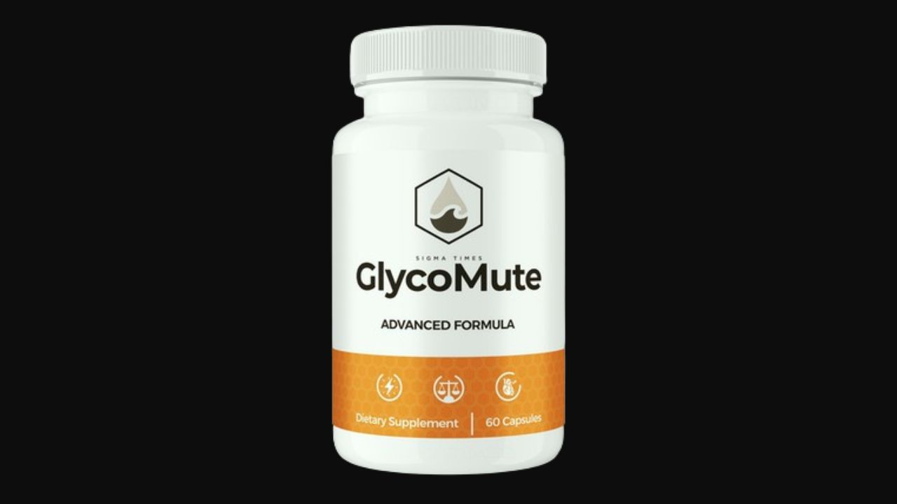

Health Reviews Labs investigated GlycoMute's multi-tradition botanical approach to blood sugar support — and why Guggul and White Mulberry make this formula mechanistically distinct from most competitors in the metabolic health category.

13 Ingredients · 4 Medical Traditions · GMP-Certified · 60-Day Guarantee
→ Click Here for Official SiteMost blood sugar formulas address glucose uptake or insulin sensitivity. Guggul addresses the inflammatory state of pancreatic tissue — the condition that progressively impairs insulin production. Guggulsterones reduce NF-kB inflammatory signaling in pancreatic beta cells and improve lipid metabolism in ways that reduce the systemic inflammatory load reaching pancreatic tissue. This upstream protection of the insulin-producing machinery is absent from most competing blood sugar formulas.
White Mulberry leaves contain deoxynojirimycin, an alpha-glucosidase inhibitor — the same class of mechanism as pharmaceutical acarbose. Alpha-glucosidase is the intestinal enzyme that converts complex carbohydrates to glucose. Inhibiting it slows the pace of glucose release into the bloodstream after meals, flattening the post-meal curve before it starts. This upstream mechanism complements the downstream pathways of every other ingredient in the formula.
Corosolic acid activates GLUT4 glucose transporters — the cellular channels that physically import glucose from the bloodstream into cells. Used in traditional Filipino medicine since the 1940s for blood sugar, now one of the most studied botanical GLUT4 activators with multiple published trials confirming the mechanism.
Charantin, polypeptide-p, and vicine in Bitter Melon activate insulin signaling pathways independently of insulin binding — a natural insulin-mimicking mechanism documented across Ayurvedic, Chinese, and African traditional medicine for centuries and confirmed in modern pharmacological research.
Gymnemic acids temporarily block glucose receptor sites on intestinal cells, reducing the speed of sugar absorption from food. Simultaneously enhances insulin receptor efficiency at the cellular level. Known as the "sugar destroyer" in Ayurvedic tradition for its ability to reduce sweet taste perception and cravings — a mechanism relevant to dietary compliance.
Terpinen-4-ol, alpha-pinene, and antioxidant flavonoids protect insulin receptor cellular membranes from oxidative degradation. The Mediterranean and Nordic herbal traditions both include Juniper for metabolic support — now understood to work through reduction of oxidative stress that impairs receptor function over time.
GlycoMute's convergence of four botanical traditions produces a mechanistically comprehensive blood sugar formula — specifically because Guggul (pancreatic inflammation) and White Mulberry (upstream carbohydrate conversion) address dimensions that most competing formulas miss entirely. The proprietary blend format means individual ingredient dosages aren't disclosed — which is a transparency limitation worth noting. GMP-certified US facility, non-GMO, stimulant-free, 60-day guarantee. Drug interaction profile is real and requires physician consultation for anyone on diabetes medication.
13 Ingredients · 4 Traditions · GMP-Certified · 60-Day Guarantee
→ Click Here for Official Site